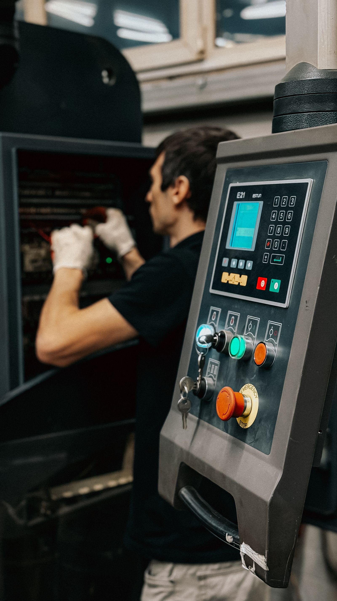
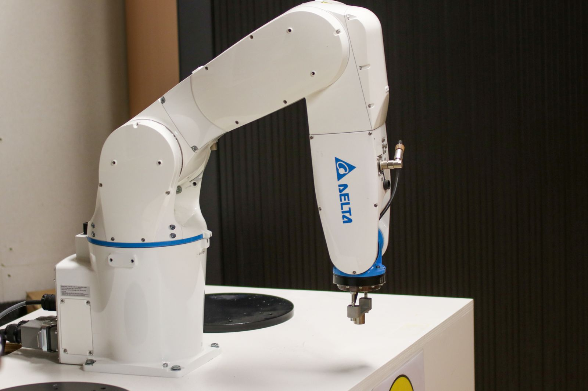

01 — About
Field-tested automation leadership
William "Liam" Martin is a mechanical engineer turned automation leader, currently serving as Automation Maintenance Manager for Walmart's Automated Picking and Dispense (APD) systems. He leads maintenance teams across Texas and Oklahoma, drives fleet-wide reliability metrics, and coordinates cross-functional response to critical outages — built on a foundation of hands-on hardware engineering, robotics diagnostics, and infrastructure support.
A B.S. in Mechanical Engineering with a Minor in Mathematics from the University of Arkansas grounds his technical approach, while a career path through hardware service engineering, deployment testing, and healthcare IT infrastructure has shaped a leader who is equally comfortable in a control cabinet, a standup meeting, or a Power BI dashboard.

02 — Experience
Career Timeline
Automation Maintenance Manager
Current- Leading a team of Maintenance Technicians to service Automated Picking and Dispense (APD) systems in Texas
- Expanded scope of responsibility to manage additional APD systems and teams in Oklahoma
- Leading morning standup meetings to report metrics and deliverables for APD systems across all U.S. regions
- Partnering with Walmart cross-functional teams, 3rd party vendors, and contractors to service operations
- Conducting safety training for all new Texas associates working with the APD system
- Coordinated a 12-technician remediation team to travel to an aging automation system to address structural issues
- Implementing new processes and hands-on rework projects to modernize existing APD systems
- Driving improvements in APD system metrics using Power BI and Microsoft D365
Hardware Service Engineer
- Regional Hardware Service Engineer for APD systems in Texas and Florida
- Subject matter expert for Alphabot Robotics System diagnostics and repair
- Project management implementing project plans to expand APD throughput
- Power BI and data analysis review for multi-system trends
- Developed technical documentation on safety first response for critical APD outages
- After-hours pager support for all hardware escalations across the Walmart APD network
- Certified trainer with an emphasis on operator and technician safety
- Proficient using D365 Field Service application (CMMS) for case and work order tracking
Automation Engineer
- Deployment Test Engineer for the APD system at Walmart Home Office Store 0100
- Experience troubleshooting HMI for Siemens PLC to investigate issues within the APD system
- Identified and documented failure points in APD system with root cause analysis
Client Systems Engineer
- Technical support specialist for client systems infrastructure supporting 12 different hospital organizations in the U.S.
- Maintained web app servers, digital filing servers, print servers, VM management via PowerShell, and networking
- Adept at replicating customer issues internally and troubleshooting software at customer sites
- Performed after-hours pager support for all critical outages at hospitals in the U.S. and abroad
03 — Highlights
Project Spotlights

Downtime Recovery from a Critical Fire Suppression Failure
- Led restoration efforts at an APD facility after a fire suppression failure caused a significant downtime event
- Directed 3rd party contractor work to sanitize the APD system and repair the fire suppression system
- Focused efforts to resolve the APD system outage and minimize operational downtime
- Followed up to coordinate a full fire suppression system rework to prevent further issues

Go-Live Installation at a New Customer Site
- Implemented a full install of client-side infrastructure for a new customer hospital organization
- Created walkthroughs and taught hospital IT staff to use, upgrade, and troubleshoot Epic software
- Worked across multiple divisions to set up critical backend infrastructure for each team's Epic application
- Managed strict timelines for IT staff to complete installation before the organization-wide go-live
04 — Skills
Technical Toolkit
05 — Certifications & Education
Credentials
Low Voltage Qualified Persons
NFPA 70E (QEW Program)
Received July 16, 2024
Certified SOLIDWORKS Associate
CSWA — Mechanical Design
Received November 29, 2016
Proficient in part assembly design and FEA simulation using CAD software.
Bachelor of Science, Mechanical Engineering
Minor in Mathematics
University of Arkansas, Fayetteville, AR • Graduated 2019
06 — Contact
Let's Connect
Open to conversations about automation, robotics maintenance, and technical leadership.